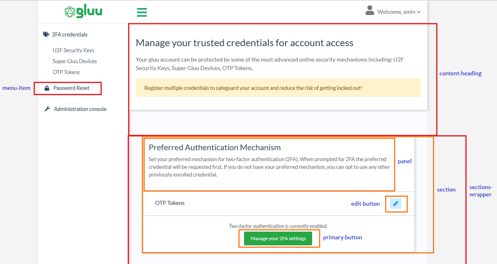

Custom branding#
In Casa, administrators can supply their own logo and favicon to better match the organization's look and feel. If you want to apply more advanced customizations, adding the custom branding plugin is the way to go.
Note
This page covers customizations available through the custom branding plugin. It is assumed you have already added it to your Casa installation.
The plugin allows administrators to easily alter the appearance of Casa. There are two ways to tweak the design: a quick point-and-click set of changes that you can preview immediately, or a lower-level approach that allows you to supply your own CSS file and images (this is known as external assets directory usage).
Quick design customization#
Click on Custom branding in the admin console, and choose Upload images and pick colors. With this branding alternative, you can apply some visual changes effortlessly with zero CSS coding. You can:
- Supply your company logo and favicon
- Choose the background color for the page header
- Choose button colors
- Edit the footer text

Once you supply your files, color values, and footer text, click on Save and see the changes take immediately by navigating to a different page or opening a new browser tab. Repeat the process till you get the combination that best matches your organization's look and feel.
With "Primary buttons" we refer to the vast majority of buttons that trigger some action such as saving, updating or accepting - whether in the user pages or the admin UI itself. "Cancel" covers undo, close or cancel, while "Misc" is for anything not fitting any of the previous usages.
You can choose "Use defaults" if you feel comfortable with the Bootstrap-like colors offered in Jans Casa.
Using the external assets directory#
Note
Intermediate-level knowledge of CSS is required for this task.
Background#
Casa's UI design is driven by one CSS stylesheet and a few images. Specifically, Casa leverages the following UI frameworks:
Particularly, ZK's default theme CSS file was disabled to offer a higher degree of flexibility in design. This enables Tachyons to claim control over style rules applied to HTML markup.
External assets directory#
In the /opt/jans/jetty/casa/static folder, you can place your own version of the main stylesheet and images Casa uses. No other stylesheet should be overriden.
To start, log in to the Janssen Server and do the following:
cd /opt/jans/jetty/jans-casa/static
jar -xf ../webapps/jans-casa.war images styles/gluu/style.css
This will copy the files you can edit later (these are the original versions provided out of the box in Casa).
If you place additional files in this directory, ensure ownership is set to recursive. For instance, you can:
$ chown -R jetty:jetty /opt/jans/jetty/jans-casa/static/
Enable and apply your customizations#
In the admin console, navigate to Custom branding > Use Casa external assets directory. From that point on, your installation is reading relevant files from the static directory.
Note
In CSS, the rules' order of appearance is important. For all Casa pages, style.css is loaded first, then tachyons.css. This means rules for Tachyons have higher priority unless !important is used.
The main stylesheet (style.css) is located at /opt/jans/jetty/jans-casa/static/styles/gluu if you have followed the instructions above.
Here are some tips for applying your customizations:
-
Get acquainted with functional CSS. This is the approach followed in Casa. Here, here, and here you can find useful introductory material.
-
Inspect the DOM tree generated for application pages and determine the CSS selectors you need to edit or things you have to add in order to alter the appearance. Use your web browser's facilities to inspect web page composition: this is usually part of any browser's developer toolbar. Moreover, they allow you to change styles on the fly so you can play a lot before applying the real changes.
-
Don't override rules that are already defined in Tachyons. Conversely, ZK rules (which are prefixed with
z-) are safe to be re-defined since ZK CSS isn't included. -
In most circumstances, your work will come down to editing existing rules in
style.css. HTML markup will show rules (in theclassattribute) prefixed withcust-that are apparently not defined anywhere. These rules are intended to give admins the opportunity to add their design tastes. The following is a list of custom selectors you can add tostyle.css. Names are in general self-explanatory, the images below help clarify more.- cust-menu-item
- cust-content-heading
- cust-sections-wrapper
- cust-section
- cust-panel
- cust-modal-window
- cust-edit-button
- cust-link-button
- cust-delete-button
- cust-primary-button
- cust-cancel-button
- cust-misc-button
- cust-text-input
- cust-progress-bar


Viewing your changes#
There is no need to restart the application for the changes to take effect. However, most static files are cached by browsers, so you will need to open a fresh private browsing (incognito) session.
If you tried the above and still don't see changes, try hitting the resource URL directly in a new browser tab. For example, to load the style.css file in your browser, visit https://<host-name>/casa/custom/styles/gluu/style.css. That way, you can determine if your changes are there.
Reverting to Default Theme#
If for any reason you wish to restore the default theme, select "Use default (Gluu Inc.) theme" in the admin dashboard.
Examples#
Here are solutions for common use cases:
Use a different logo#
Just replace images/logo.png (relative to the static directory) with your own image.
Use a Different Favicon#
Replace images/favicon.ico with your own image.
Change the Font Used in Text#
The vast majority of text that appears in the application uses the same font. To set the default font, locate at the bottom of style.css a declaration like @import url('https://fonts.googleapis.com... and point to one of your choosing. Check out this page to learn more about Google fonts.
Then, scroll down and modify the html and body selectors appropriately with the font you picked.
If you want to use your own fonts instead of Google's, you can use @font-face for this purpose. Copy your ttf, woff, svg or eot files somewhere in the static directory and link them appropriately.
To use the more classical fonts like "Helvetica", "Arial", etc., simply update html and body selectors passing the font-family name.